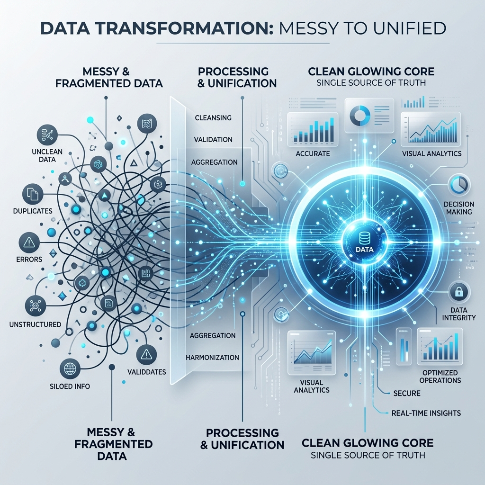

Merge Engine Documentation
Welcome to the Merge Engine documentation. This guide covers everything you need to install, configure, and use Merge Engine to deduplicate your Salesforce data.

Installation
Merge Engine is available as a managed package on the Salesforce AppExchange. Installation takes approximately 5 minutes and requires no coding.
Requirements
- Salesforce Professional, Enterprise, Unlimited, or Developer Edition
- System Administrator profile (for initial installation)
- API access enabled on your Salesforce org
Step-by-step installation
- Visit the Merge Engine AppExchange listing.
- Click Get It Now and log in with your Salesforce credentials.
- Choose Install for All Users or Install for Specific Profiles.
- Approve the required permissions and click Install.
- Once installed, find Merge Engine in the App Launcher (⋮⋮⋮).
Permissions Setup
After installation, assign the correct permission sets to users who need access to Merge Engine.
Available Permission Sets
Merge Engine Admin— Full access: can merge, export, and configure settingsMerge Engine User— Can search for and merge records, but cannot export or change settingsMerge Engine Read Only— Can view duplicate groups but cannot merge
Assigning Permission Sets
- Go to Setup → Users → Permission Sets
- Click Merge Engine Admin (or the appropriate set)
- Click Manage Assignments → Add Assignments
- Select the users and click Assign
Quick Start Guide
After installation and permissions setup, here's how to run your first duplicate cleanup:
- Open the App Launcher and search for "Merge Engine"
- Select the Salesforce Object you want to deduplicate (e.g., Contact)
- Choose AI Search mode for best results
- Select the fields to compare (Name, Email, Phone are recommended)
- Click Find Duplicates
- Review the duplicate groups — star indicates the recommended primary record
- Optional: Click Export CSV to create a backup before merging
- Select the groups you want to merge and click Merge Selected
- Confirm the merge in the dialog
Manual Search
Manual Search lets you build precise queries using specific field values. Use this when you know exactly what you're looking for — for example, all contacts with the email domain @acme.com.
In Manual Search mode, you can:
- Search by exact field value match
- Combine multiple fields with AND / OR logic
- Use wildcard characters (
%) in text fields - Filter by record owner, created date, or any other field
AI Search NEW
AI Search is the recommended mode for most deduplication tasks. It uses advanced string similarity algorithms to find records that are clearly the same entity, even when field values differ slightly.
How AI Matching Works
Merge Engine uses a combination of techniques to compute a similarity score between records:
- Jaro-Winkler Distance — Works well for names and short strings. Gives extra weight to prefix matches.
- Token Overlap (Jaccard) — Splits text into words/tokens and measures how many tokens two records share. Handles word reordering.
- Phone Normalization — Strips country codes, brackets, spaces, and dashes before comparing phone numbers.
- Email Domain Grouping — Groups contacts who share the same email domain, regardless of the local part.
Similarity Threshold
You can configure the minimum similarity percentage (default: 80%) below which two records will not be grouped together. Lower thresholds find more matches but may include false positives.
Recommended thresholds:
Names only: 80–85%
Name + Email: 85–90%
Name + Email + Phone: 90%+Merging Records
When you're ready to merge a duplicate group:
- Identify the Primary Record — the one to keep. Merge Engine suggests the best candidate (marked ★) based on data completeness and record age.
- Review field values from each duplicate to confirm you have the right primary
- Click Merge Group
- Confirm the action in the dialog
Bulk Merge
To merge multiple groups at once:
- After finding duplicates, use the checkbox on each group to select it
- Use Select All to check all groups on the current page
- Click Merge X Groups at the top of the list
- Review the summary in the confirmation dialog
- Click Confirm Bulk Merge
Bulk merge processes groups sequentially and shows a real-time progress indicator. You can safely navigate away — processing continues in the background.
CSV Backup Export
Before any merge session, we strongly recommend exporting a CSV backup. This gives you a snapshot of all records that will be affected.
To export:
- After finding duplicates, click Export CSV in the toolbar
- Choose what to include: all records in duplicate groups, or only the records that will be deleted
- Your browser will download a
.csvfile immediately
The CSV includes all field values Merge Engine has access to, including all standard and custom fields on the object.
Custom Filter Builder
The Filter Builder lets you narrow the pool of records before running duplicate detection. This is useful for large orgs where you want to focus on a specific subset — for example, "only contacts in the US" or "only accounts created in the last 90 days".
Each filter row contains:
- Field — Any field on the object, including custom fields
- Operator — equals, contains, starts with, greater than, is not null, etc.
- Value — The comparison value
Rows can be combined with AND (all conditions must match) or OR (any condition matches) logic. The generated SOQL is shown live in the preview panel.
Standard Objects
Merge Engine has full support for Salesforce's three standard mergeable objects:
- Contact — Supports native Salesforce Contact merge. Up to 3 records per merge.
- Lead — Supports native Salesforce Lead merge. Up to 3 records per merge.
- Account — Supports native Salesforce Account merge. Up to 3 records per merge.
Custom Objects
For all other objects — including custom objects and non-standard standard objects — Merge Engine uses a re-parent-and-delete strategy:
- All child records (lookups, master-detail) are re-pointed to the primary record
- Field values from non-primary records are optionally copied to the primary if the primary field is blank
- Non-primary records are deleted
Related Records
When merging accounts or custom objects, Merge Engine automatically re-parents the following relationship types:
- Lookup relationships (child records pointing to the merged record)
- Master-detail relationships
- Activities (Tasks, Events) and Email Messages
- Chatter feeds and attachments
- Files and ContentDocumentLinks
Data Security
Merge Engine is a 100% native Salesforce managed package. All processing happens inside your Salesforce org:
- No data is transmitted to external servers
- The AI similarity matching runs client-side in JavaScript — not in any cloud we control
- All Salesforce API calls are made server-side (Apex), inside your org
- The package was reviewed and approved by Salesforce's Security Review team
Profiles & Permissions
Merge Engine respects all Salesforce security settings:
- Object-Level Security (OLS) — Users who cannot read or delete a record type cannot see it in Merge Engine
- Field-Level Security (FLS) — Fields a user cannot see are hidden in the duplicate comparison view
- Record Sharing Rules — Users only see records they have access to based on org-wide defaults, roles, and sharing rules
Release Notes
v2.4.0 — April 2025
- Phone number fuzzy matching with normalization (new in AI Search)
- Improved bulk merge performance — 3× faster for groups over 1,000 records
- CSV export now includes Related Record counts per group
- Bug fix: Custom object re-parent now handles polymorphic lookups correctly
v2.3.0 — January 2025
- Email domain grouping mode added to AI Search
- Filter Builder now supports relative date operators (e.g., "Last 30 Days")
- New Read Only permission set added
- SOQL preview panel added to Filter Builder
v2.2.0 — October 2024
- Bulk merge — merge multiple groups in a single action
- Progress indicator for large merge operations
- Support for merging ContentDocumentLinks (Files) during Account merge
Frequently Asked Questions
Can I undo a merge?
Merges performed on standard objects (Contact, Lead, Account) cannot be automatically reversed — this is a Salesforce platform limitation. This is why we strongly recommend exporting a CSV backup before every merge session. With your backup, a Salesforce admin can manually restore records.
Why is Merge Engine only finding some of my duplicates?
Check your similarity threshold — it may be set too high. Try lowering it to 75–80%. Also ensure you're searching on the right fields; AI Search works best when you include both Name and Email.
Can I schedule automatic duplicate detection?
Scheduled detection is on the roadmap for v2.5. In the current release, all duplicate detection is triggered manually.
What's the maximum number of records I can merge at once?
Bulk merge can handle up to 10,000 records per session before hitting Salesforce governor limits. For very large orgs, we recommend running merge sessions in batches filtered by record owner or date range.